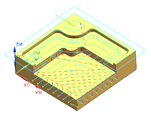

在工序中使用新刀具
您将拖动工序并将其放进刀具对象中，以指定工序使用的刀具。
-
在工序导航器中，将工序 FACE_MILLING_AREA 拖到刀具对象 EM–1_.031中。
工序 FACE_MILLING_AREA 现在使用的刀具是 EM—1_.031。
重新生成符号
 出现在粘贴的工序之前，这表示工序参数已更改，必须重新生成刀轨以反映此更改。
出现在粘贴的工序之前，这表示工序参数已更改，必须重新生成刀轨以反映此更改。使用刀具 EM–1_.031生成刀轨，这将更新工序状态。
-
右击 FACE_MILLING_AREA 并选择生成。
-
后处理符号 出现在粘贴的工序之前，这表示工序参数已更改，并且工序已经生成，但尚未进行后处理或导出。
